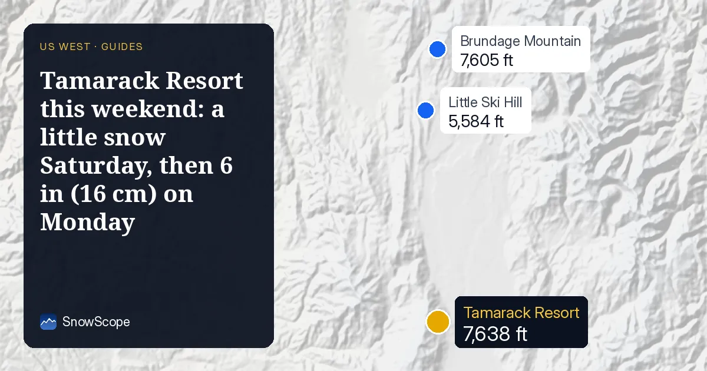
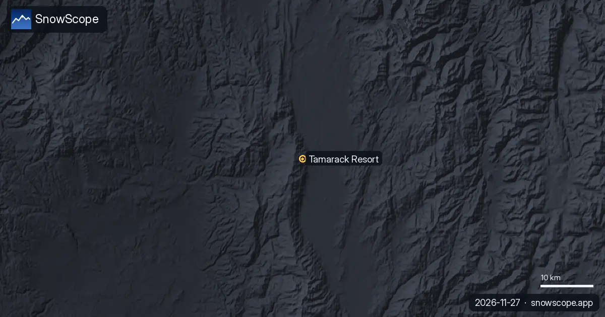
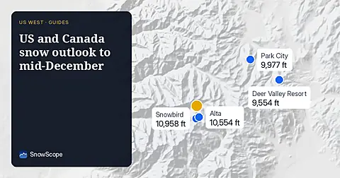

Tamarack Resort this weekend: a little snow Saturday, then 6 in (16 cm) on Monday
Tamarack has 20 in (52 cm) on its upper slopes on Friday, November 27, after 6 in (16 cm) in three days. Saturday adds about 3 in (8 cm), Sunday is dry, and Monday brings the bigger round, about 6 in (16 cm), which should lift the upper mountain to roughly 26 in (65 cm).
See the live snow forecast for Tamarack Resort in the SnowScope appSnow depth, powder alerts and the 3D map, free.

Day by day
Friday: 6 in (15 cm) new, cold. Saturday, November 28: about 3 in (8 cm), light snow through the day, soft groomers by the afternoon. Sunday: dry and colder, firm in the morning. Monday, November 30: about 6 in (16 cm), the best snow of the coming days. Over seven days the summit could see 10 in (25 cm).
Tamarack runs from 4,882 ft (1,488 m) near Lake Cascade to 7,638 ft (2,328 m) at the top of the West Mountains, a big vertical for a resort many skiers outside Idaho have never visited.
How this start compares
At 6,260 ft (1,908 m), the middle of the mountain, the pack is 10 in (26 cm), where 15 in (38 cm) is normal for late November. A 30 cm (12 in) base usually arrives around November 22, so Tamarack is close to its normal track and the Monday storm should move it ahead.
A normal December takes the mid-mountain from 21 in (54 cm) on December 8 to 31 in (79 cm) on Christmas Day. A 50 cm (20 in) base by New Year came in 96% of 46 winters.
Where to ski
With a thin but growing base, the groomed blues and reds off the main lifts are the best bet this weekend. The glades that Tamarack is known for need another storm or two before they ski well.
Lift lines are rarely a problem here, even on holiday weekends, which is a big part of the appeal for skiers from Boise and the Treasure Valley.
The bigger picture in Idaho
The biggest winter on our record was 1998-99, peaking at 8.3 ft (253 cm); the leanest, 2000-01, at 38 in (97 cm). The usual snowpack is deepest in late February, near 4.4 ft (135 cm) at mid-mountain. December is the build-up, and storms like Monday's are how it happens.
Tamarack versus Brundage and Bogus Basin
Brundage, a little farther north near McCall, is the other big name in the West Mountains and often catches a bit more snow from the same storms. Bogus Basin, above Boise, is the closest but the lowest of the three.
For the coming weekend Tamarack has 20 in (52 cm) on its upper slopes and a clear storm on Monday, which makes it a good pick for an early-season trip, especially for skiers who want big vertical without the crowds. After the storm, the snow at mid-mountain should move closer to the 21 in (54 cm) that is normal for December 8.
Getting there
Tamarack is about two and a half hours north of Boise on Highway 55 along the Payette River. The road is beautiful and busy on weekends; leave early and allow for snow on the canyon stretch.
Follow the snow every day on the Tamarack snow page.
Quick answers
Is it worth going this weekend? Yes for groomed runs; for powder, wait for Monday's storm or come next weekend.
Is there lodging on the mountain? Yes, the village at the base has condos and a lodge, and Cascade and McCall offer more choice a short drive away.
Will Christmas be good? History says likely: snow on the ground on Christmas Day in 100% of winters at mid-mountain, with a usual 31 in (79 cm).
Tips for skiers
- Saturday afternoon or Monday are the snowiest moments of the next days.
- Stay on groomed runs until the trees fill in.
- Carry chains on Highway 55 during storms.
- Compare with other Idaho and Montana areas on the US West snow hub.
About these numbers
Snow numbers: SnowScope's snow map and forecast for today, and our record of 46 past winters at each resort (an estimate for the area, not the resort's own report).
Official avalanche bulletins: avalanche.org (US national portal)
Cite this report
For research, teaching or the press: the numbers and charts are free to reuse under CC BY 4.0 with this citation.
SnowScope (2026), Tamarack Resort this weekend: a little snow Saturday, then 6 in (16 cm) on Monday, https://snowscope.app/blog/en/2026/11/tamarack-resort-idaho-snow-this-weekend-and-the-storm-on-monday.html, accessed 2026-11-27
SnowScope (Atlas Labs). (2026, November 27). Tamarack Resort this weekend: a little snow Saturday, then 6 in (16 cm) on Monday. SnowScope snow reports. https://snowscope.app/blog/en/2026/11/tamarack-resort-idaho-snow-this-weekend-and-the-storm-on-monday.html
BibTeX
@misc{snowscope2026tamarackresortidahosnowt,
author = {{SnowScope (Atlas Labs)}},
title = {Tamarack Resort this weekend: a little snow Saturday, then 6 in (16 cm) on Monday},
year = {2026},
month = nov,
howpublished = {\url{https://snowscope.app/blog/en/2026/11/tamarack-resort-idaho-snow-this-weekend-and-the-storm-on-monday.html}},
note = {Published 2026-11-27 22:11 UTC; accessed 2026-11-27}
}· CC BY 4.0 · Methods, data and tools →
Tamarack Resort: snow and temperature by height, this winter vs last (tools) →
Follow Tamarack Resort
Free: a message when fresh snow is coming, and the forecast every morning.
More snow reports

Colorado's big resorts go into December with a thin base. How far behind each one is, what a normal December adds, and where to go first.

Western US and Canada snow forecast for the next 3 weeks from the 50-member ECMWF ensemble, NOAA GEFS and NASA MODIS: Whistler median 82 in (210 cm) by 8 December, Mammoth 21 in (53 cm), Alta 14 in (35 cm), Vail 14 in (34 cm). Lake Louise is the lean spot at 12 %.

Mt Baker received 40 cm of fresh snow on 26 Nov. Three resorts across the US West got major dumps; more snow forecast through the weekend.